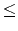

Given two strings A and B over an alphabet
, the edit distance between A and B is the minimum number of edit operations needed to convert A into B. The three edit operations are the following:
(i)
change: replace one character of A by another single character of B.
(ii)
deletion: delete one character from A.
(iii)
insertion: insert one character of B into A.
For example, the following figure shows that the edit distance between the strings A=abcdefg and B=ahcefig is 3. The edit operations are a change (i.e., replacing b of A by h of B), a deletion (i.e., deleting d from A), and an insertion (i.e., inserting i of B into A).
We now define a period of a repetitive string as follows: The string p is called the exact period of a string x if x can be written as x = pk, where k1 and p is the shortest string. For example, if x =abababab then x = (abababab)1 = (abab)2 = (ab)4. Thus, the string ab is the exact period of x.
We define an approximate period similarly. Given two strings x and y, suppose that the string x is partitioned into substrings pi,
1it, where pi is not a null string, i.e.,
x = p1 . p2 . p3 ... pt. If the edit distance between a string y and each substring pi is less than or equal to an integer k, string y is called a k-approximate period of string x.
In this problem, given two strings x and y, we want to find the minimum k such that string y is a k-approximate period of string x. For example, suppose that two strings x = abcdabcabb and y=abc are given. Since x may be partitioned into
x = p1 . p2 . p3 = abcd . abc . abb and the edit distances between string y=abc and each substring abcd, abc, and abb equal to 1, 0, and 1, respectively, y is a 1-approximate period of x. Hence, the minimum k is one.
Your program is to read from standard input. The input consists of T test cases. The number of test cases T is given in the first line of the input. For each test case, a string y is given in the first line and the string x is given in the next line. The length of string y is at least 1 and at most 50, the length of string x is at least 1 and at most 5000, and the alphabet
is the set of lowercase English characters.
Your program is to write to standard output. Print exactly one line for each test case. Print the minimum integer value k such that string y is a k-approximate period of string x.
The following shows sample input and output for three test cases.